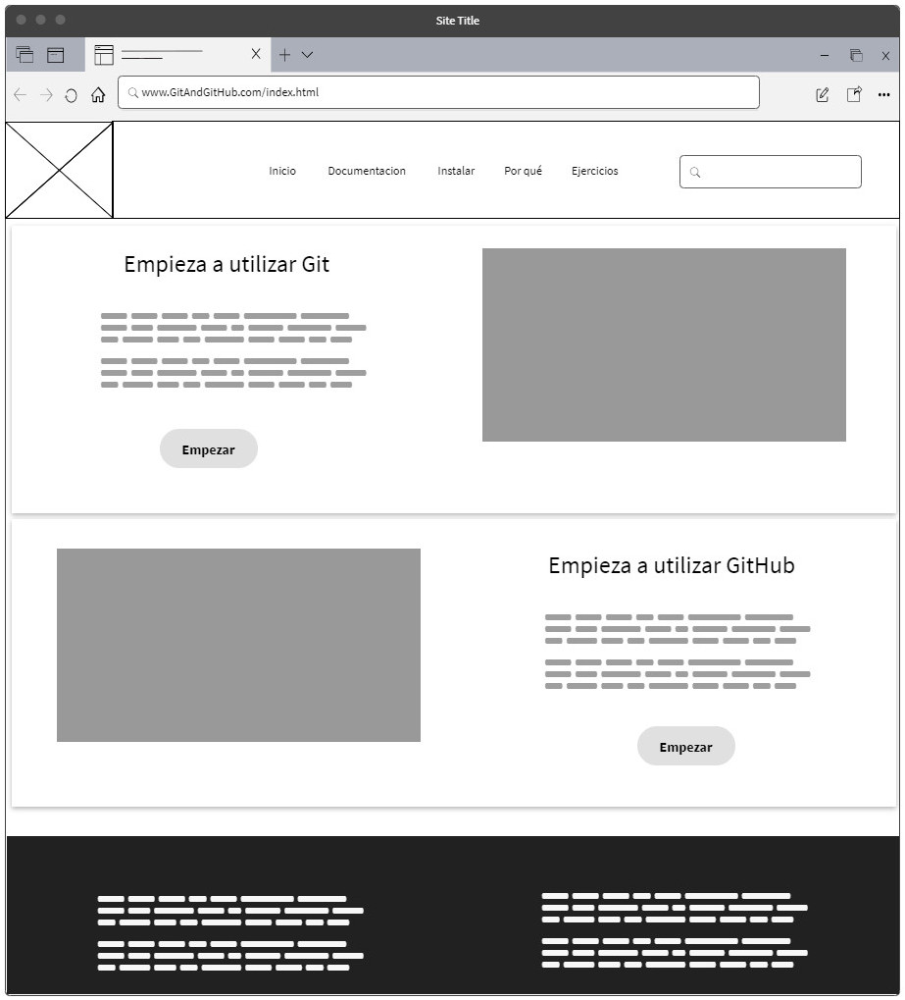

Crear el Guión y la maquetación para un OVI
Objetivo general:
Aprender los fundamentos basico de git como herramienta de control de versiones y GitHub comosistema de gestión de proyectos, para posteriormente implementar estas tecnologías en un proyectos que se desarrollarara como ejercicio practico.
Objetivo específico
Realizar la configuración e instalación de git y GitHub.
Definir los comandos básicos utilizados para trabajar con Git.
Poner en práctica Git y GitHub mediante el desarrollo de un ejercicio practico.
Materiales:
Documentación:
Descargar Git: https://git-scm.com/downloads
Descargar GitHub: https://desktop.github.com/
Comandos de Git: https://confluence.atlassian.com/bitbucketserver/basic-git-commands
Descargar Git: https://git-scm.com/downloads
Descargar Git: https://git-scm.com/downloads
Aprende Git de forma interactiva:
Pagina interactiva: https://learngitbranching.js.org/?locale=es_ES
Videos:
Curso Completo de Git y Github para principiantes: https://www.udemy.com/course/curso-completo-de-git-y-github-para-principiantes/
Curoso GIT y GITHUB desde cero!: https://www.udemy.com/course/introduccion-git-github/
Curso de introducción a Git & GitHub: https://www.udemy.com/course/introduccion-a-git-github/
Curso inicia en la Programacion: Primer Paso Git y Terminal: https://www.udemy.com/course/curso-de-programacion-aprender-a-programar-git-terminal/
Curso aprende a dominar Git de cero a experto: https://www.udemy.com/course/aprende-a-dominar-git-de-cero-a-experto/
Imagenes:


Contenido:
Que es GitHub: Es un sistema de gestión de proyectos y control de versiones de código, así como una plataforma de red social diseñada para desarrolladores, es decir permite trabajar en colaboración con otras personas de todo el mundo, planificar proyectos y realizar un seguimiento del trabajo.
Que es Git: Es un software de control de versiones el cual fue creado en la eficiencia y la confiabilidad del mantenimiento de versiones de aplicaciones cuando éstas tienen un gran número de archivos de código fuente, es decir Git nos proporciona las herramientas para desarrollar un trabajo en equipo de manera inteligente y rápida y por trabajo nos referimos a algún software o página que implique código el cual necesitemos hacerlo con un grupo de personas.
Que es control de versiones: se define como control de versiones a la gestión de los diversos cambios que se realizan sobre los elementos de algún producto o una configuración, es lo que se hace al momento de estar desarrollando un software o una página web.
Comandos de Git: A continuación se muestran algunos comandos basico de git
Comandos Descripción git init Iniciar un repositorio vacío en unas carpeta específica. git clone http//repositorio Clonar repositorio. git add “nombre_de_archivo” Añadir un archivo especifico. git add . Añadir todos los archivos del directorio. git commit -m “mensaje” Confirmar los cambios realizados. El “mensaje” generalmente se usa para asociar al commit una breve descripción de los cambios realizados. git branch “nombre rama” Crear rama (branch). git checkout “nombre rama” Pasar a la rama (branch). git branch -a Listar branch. git status Mostrar el estado actual de la rama(branch), como los cambios que hay sin hacer commit. git push origin “nombre rama” Subir la rama(branch) “nombre_rama” al servidor remoto. git pull “nombre rama” Bajar los cambios de la rama(branch). git revert “hash_commit" Revertir el commit identificado por "hash_commit". git help Listar comandos de Git.
Mocup:
